Alfa Romeo
La Meccanica delle Emozioni
Founded: 1910
Country: Italy
Icon: Giulia, Spider
Italian Passion
La Meccanica delle Emozioni
Alfa Romeo is one of the most storied names in automotive history. Founded in 1910 as A.L.F.A. (Anonima Lombarda Fabbrica Automobili), the company quickly established a reputation for engineering excellence and racing success.
The first car, the 24 HP, was designed by Giuseppe Merosi. In 1915, Nicola Romeo took over, and the company became Alfa Romeo. After WWI, Alfa Romeo focused on luxury cars and racing.
The 1920s and 1930s were Alfa's golden age of racing. The P2 Grand Prix car won the first World Championship in 1925. Enzo Ferrari ran the racing team before founding his own company. Alfa Romeo dominated with cars like the 8C 2300 and 8C 2900B.
After WWII, Alfa Romeo moved to producing more accessible cars. The 1900 (1950) was their first mass-produced car. The Giulietta (1954) was a beautiful small car that brought Alfa style to a wider audience.
The 1960s brought the Giulia – one of the greatest sports sedans ever. Its twin-cam engine, rear-wheel drive, and perfect balance set the template. The Duetto Spider (1966), immortalized in "The Graduate," became a style icon.
The 1970s and 1980s were difficult. Financial struggles, government ownership, and rust issues tarnished the brand. But cars like the Alfetta GTV and 75 kept the passion alive.
Fiat acquired Alfa Romeo in 1986. The 164 (1987) was a modern sedan. The 156 (1997) won Car of the Year with stunning design. The 8C Competizione (2007) was a breathtaking supercar.
Today, Alfa Romeo is part of Stellantis. The Giulia (2015) and Stelvio (2016) SUVs have returned the brand to its sporting roots. The Quadrifoglio versions, with Ferrari-derived V6s, are world-class performance cars.
"Alfa Romeo is not just a car, it's a way of life."- Enzo Ferrari
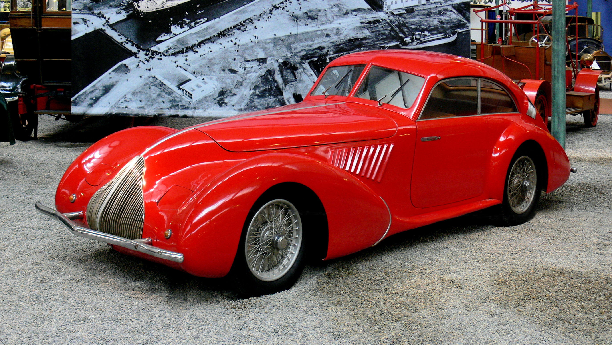
1937-1939
One of the most beautiful and valuable pre-war cars. Supercharged straight-8, stunning coachbuilt bodies, and racing pedigree.
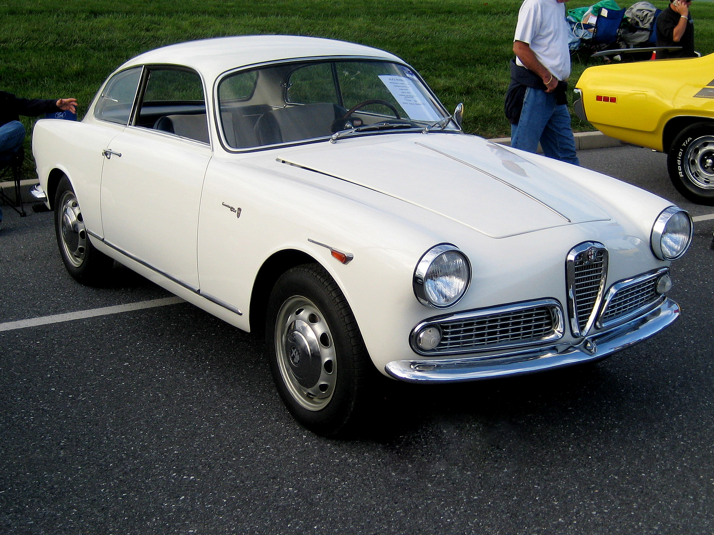
1954-1965
The car that brought Alfa to the masses. Beautiful Bertone design, twin-cam engine, and sporting character in a small package.
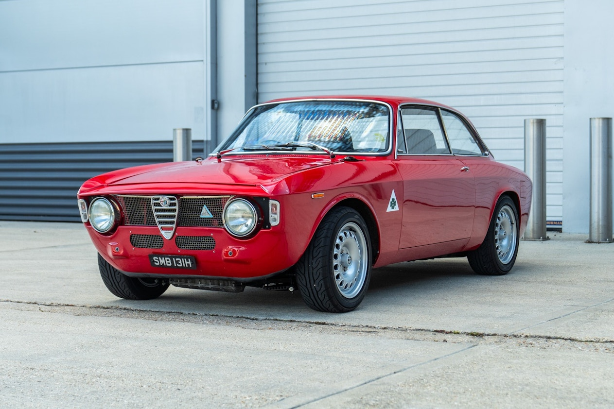
1962-1977
The benchmark sports sedan. Twin-cam engine, rear drive, and perfect balance. The Giulia Super and GT are legends.
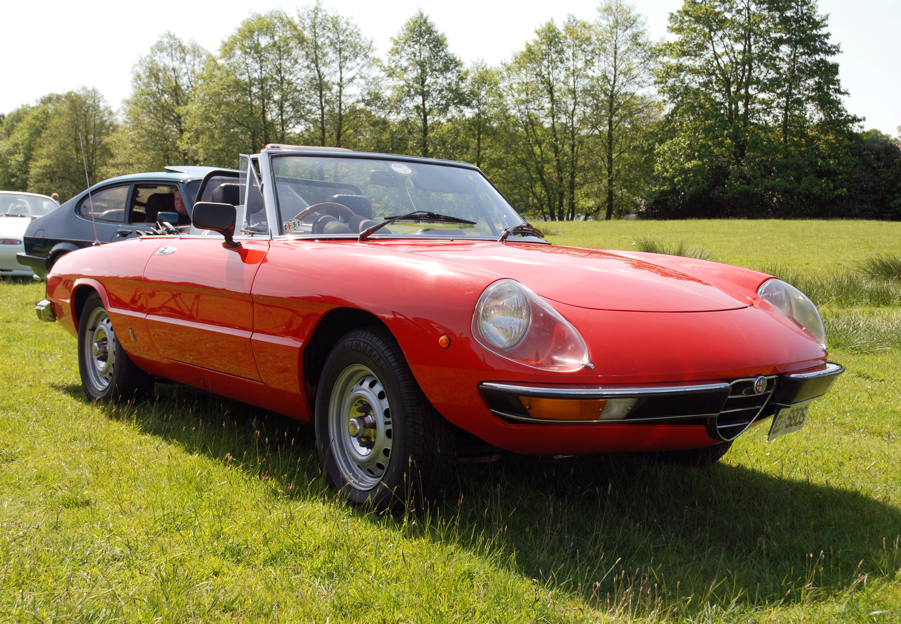
1966-1993
The "Graduate" car. Beautiful Pininfarina design, affordable open-top motoring, and that unforgettable shape.
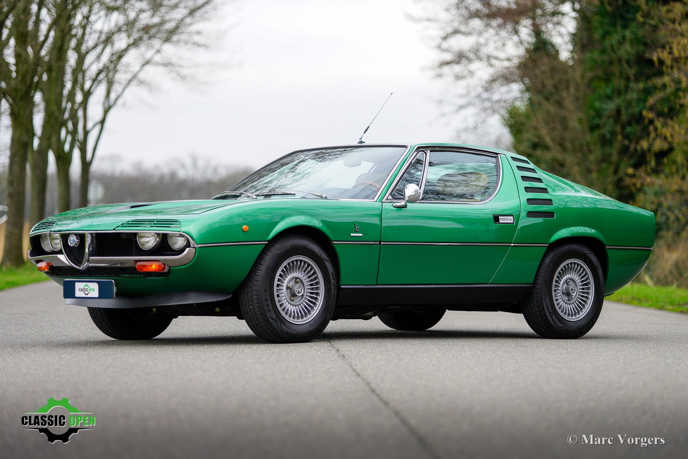
1970-1977
Stunning Bertone design with a V8 engine derived from the Tipo 33 race car. Slatted grille and pop-up headlights.
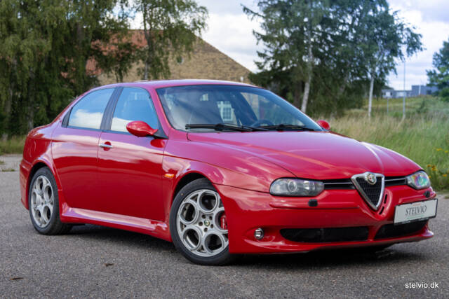
1997-2007
1998 Car of the Year. Stunning design by Walter de Silva, with hidden rear door handles. The GTA version is a classic.
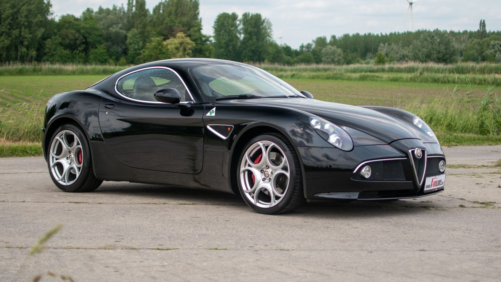
2007-2010
Modern masterpiece. Ferrari V8, 450 hp, and breathtaking design. Only 500 built.
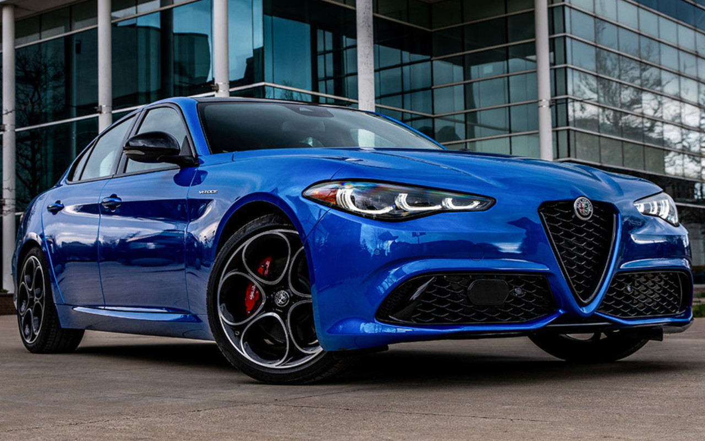
2015-present
The modern legend. Ferrari-derived V6, 505 hp, and world-class handling. A BMW M3 competitor with Italian soul.
The Quadrifoglio (Italian for "four-leaf clover") is Alfa Romeo's symbol for its highest-performance models. It dates back to 1923.
Driver Ugo Sivocci painted a white square with a four-leaf clover on his Alfa Romeo RL for the 1923 Targa Florio. He won the race. After his death in practice for the next race, the symbol was kept but placed on a triangle background to honor him.
The Quadrifoglio represents Alfa's racing soul – performance, passion, and Italian style.

The Alfa Romeo Spider is one of the most beloved convertibles ever. Its 27-year production run and timeless design made it an icon.
The 1967 film "The Graduate" featured Dustin Hoffman driving a red Duetto Spider. The car became a star, forever linking the Spider with 1960s cool.
The Spider's design by Pininfarina is timeless. It's affordable, beautiful, and pure driving pleasure. It's the quintessential Italian sports car.
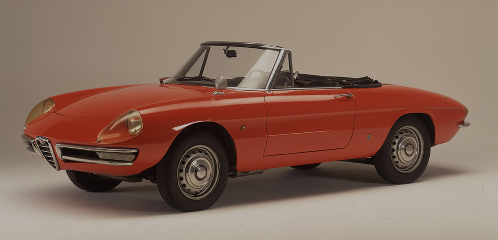
Alfa Romeo won the Mille Miglia 11 times – more than any other manufacturer. The 8C 2900B's 1937 win is legendary.
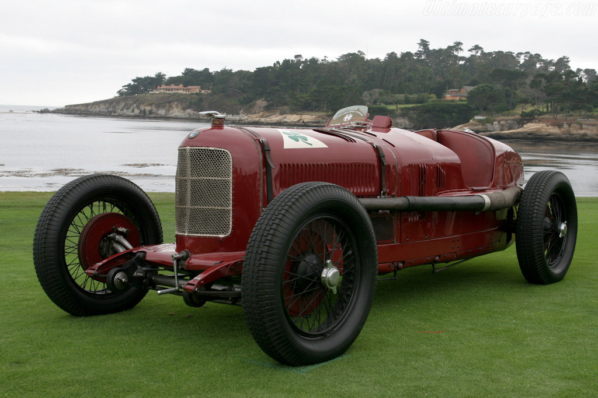
Under Fiat/Stellantis, Alfa Romeo has been revitalized with a focus on performance and style.
The Giulia QV was the first Alfa to truly rival BMW M3 and Mercedes C63 AMG. It proved Alfa could still build world-class sports sedans.
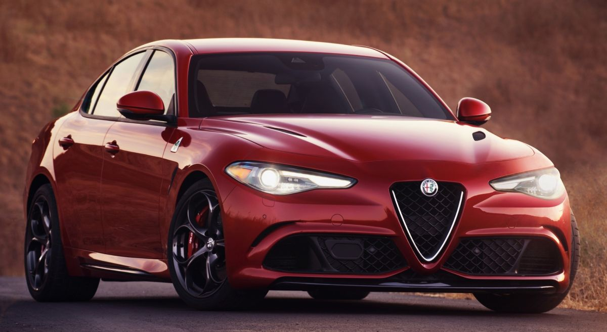